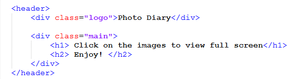
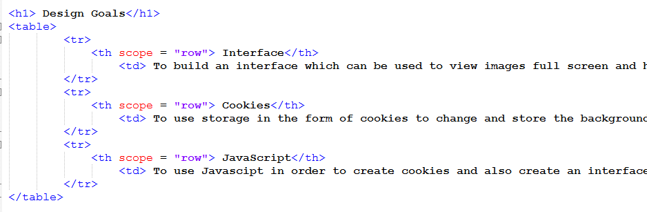
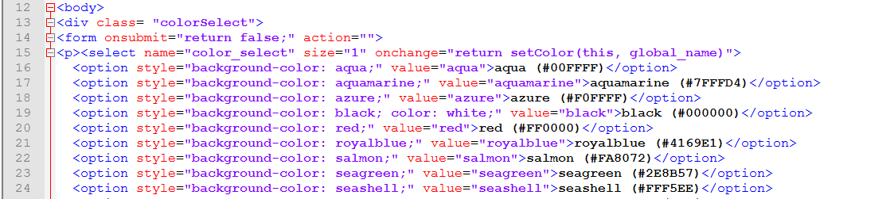
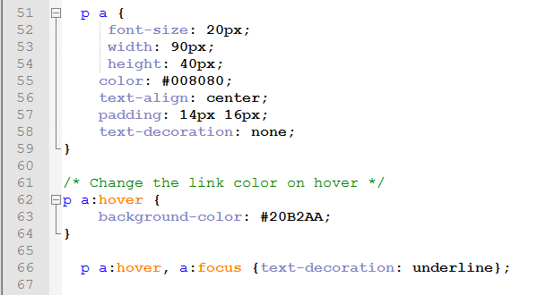
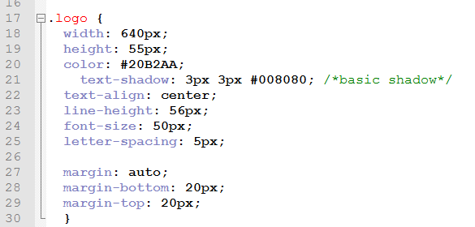
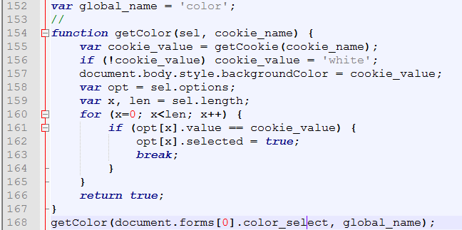
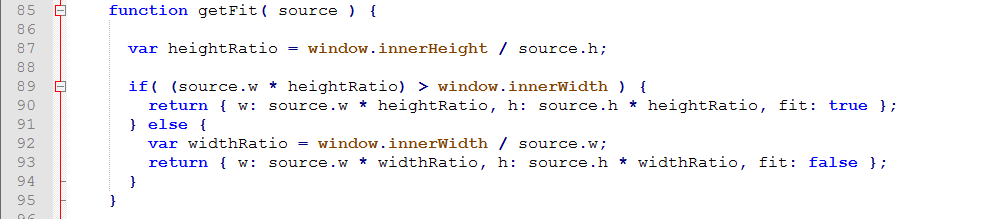

This website has the options to view cool images, login and view the design document for the site. The purpose of this website is to complete all the requirements for the midterm. I hope it does!
| Interface | To build an interface which can be used to view images full screen and have the ability to pan around the image |
|---|---|
| Cookies | To use storage in the form of cookies to change and store the background color of the video page |
| JavaScript | To use Javascipt in order to create cookies and also create an interface with responsive design in which the user can intereact with/ pan around images |
| HTML Tags |
|---|
|
Example 1: < div > :  The div tag is used to separate the encapsulated text so that we can later style that divison of HTML with CSS In the above code the div element creates the class attribute "logo". In CSS the class is styled to make the webpage title. |
|
Example 2: < table > :  < table > is used to form tables in html. < th > defines a table header, < tr > defines a table row and < td > defines a data cell in a table Scroll up to the Design Goals section to see the above code put into action. |
|
Example 3: < form > :  The < form > tag is used to create a an HTML form for user input In the above code the < form > tag was used to create a drop down menu |
| CSS Examples |
|---|
|
Example 1: p a :  The form "p a" for a CSS selector matches an element that is a descendant of another specified element. In this specific instance, we are matching the paragraph selector to the link selector and specifying how we want the text to appear. In the next block of code we are again matching these two selectors and defining that when a user hovers over a link, the background color will change |
|
Example 2: .classname :  The form ".classname" in a CSS file matches the value that is listed after the period to the class attribute with the same value on the HTML page. In this example, we separate < div class = "logo" > in the HTML code in order to stylize the text later in CSS as shown. |
| JS Examples |
|---|
|
Example 1: var and getColor function :  This is the function which allows the background image to change. In line 157 we can see that the background color is set to the cookie_value. Line 168 shows that we derive cookie_value from the user specified global_name, which is the color chosen in dropdown menu |
|
Example 2: getFit function :  Returns whether target a vertical or horizontal fit in the page. As well as the right fitting width/height of the image. |
| Alpha |
|---|
|
Issue 1: The cookie created to change the background color on the video page only changes the background color for what the browser is currently displaying. If you scroll past the initial scope of the screen the changed background color stops working |
|
Issue 2 : Syntax errors were frequent issues I ran into while designing the site. Sometimes it took me way too long to find the bug. I am going to avoid this next time by using an IDE to develop my site rather than Notepad++ so that I can be alerted of syntax errors |
|
Issue 3 : Creating tables posed quite a problem for me at first. After working with them for a while I was able to somewhat master it Practice makes perfect so I have to just keep on coding my life away until I become a pro. Also really need to step up my JS game. |
| Beta |
|---|
|
My Beta testing was conducted in a way in which I showed my dad, housemates, and classmates my website and asked for their feedback. All of the people that I showed really liked the intense image viewer and all the colorful CSS designs. I walked people though the different pages of the site and they told me ideas of what to add and change. We also did this type of testing in the form of a mini Dojo in class. It was fun! |
|
Recommendation 1 : Someone recommended that I use a separate stylesheet for each webpage because it would be more exciting. I liked their idea and made a separate stylesheet for each webpage. Although different, all pages are styled using similar themes |
|
Recommendation 2 : Another recommendation I recieved was to put the video on a separate webpage from the Design Document so that the bug in my color cookie changer doesn't show. I liked this idea and did so. Cover the evidence lol. |
|
Recommendation 3 : My dad recommended that I try to design my website on an IDE rather than Notepad++, because Notepad doesn't alert you of syntax errors I didn't actually make this change because I felt like I was already in too deep on Notepad with this project. Next time I will definitely use an IDE because I feel as though it would have saved me alot of time in the grand scheme of things |